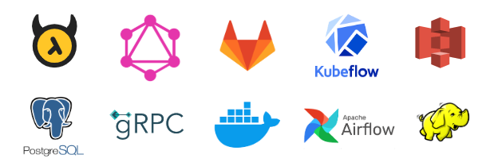

2020 Retrospective¶
The year 2020 with the pandemic was for sure so much different for all of us.
Q1 Theme: ERCOT 24x7 trader UI Stubbed Sim¶
- January
Understand the Optimization team elegant design patterns!
Catching up with all the Tech Buzz words and acronyms!
First Stab at Optimal Bidding.
Market Structures from Texas (ERCOT) to UK (EPEX and ELEXON)
First API calls to ELEXON public DB
- February
Introduced to Orchestration concepts and Airflow
Working with Power Workbench ( a cloud-based development env)
Working with AWS S3, console, CLI, and python API
PostGres, Querries and pushing data in PGAdmin, and python API SQLAlchemy
- March
Developed First Module and First DAG in Dev and Stage
First 24x7 optimization and bidding module for real assets in ERCOT
Intro to GitLab, and CICD basics
Intro to Containerization and Docker
Q2 Theme: ERCOT Wrap-up, Italy Trader UI¶
- April
Intro to JSON Schema, proper json data definition, QuickType and other tools for json data validation
More pressure on proper testing and a logging practices!
Running Docker images and containers
Intro to Kubeflow for building pipelines
Feeling the heat and sweat of code testing, 24x7 issue tracking and bug fixing!
- May
Building the 24x7 the proper way; separating the applications with clear I/O requirements and testing
More pressure on code development with containerization in mind
Intro to GraphQL, and Hassura
Secret management, env files where to put them, how to use them, and deploy them
- June
Intro to CICD yaml files
First module to be used in production used by Italian traders!
Really feeling the need for UMLs!
Q3 Theme: MP2 Position Manager¶
- July
More struggle with data hierarchies and hierarchy mapping
Writing Dockerfiles and building docker images
Intro to KubeFlow Kale a tool for building pipelines within the code
Writing querries and mutations in Hasura
- August
Intro to Kafka, message consumers and producers
Architecture design for scheduling app
Intro to building package, first effort in building a library
Setting up docker containers and docker networks with DBs
- September
Secret management nightmare, the journey from env files to kubeflow vault
Integrated Optimal Bidding Scheduling with Stochastic Optimization
Intro to Hadoop HDFS in docker and toy mapreduce models
Q4 Theme: Everything Refactored!¶
- October
Intro to Micro Services
Intro to Protocol Buffers and gRPC
Working with a gRPC server
- November
Intro to golang
More on protobuf and gRPC and python representations
PoC of solving asset optimization with ORtools protobuf
- December
Intro to gRPC server client design
First PoC of complete gRPC client/server implementation for asset optimization
Intro to Sphinx!